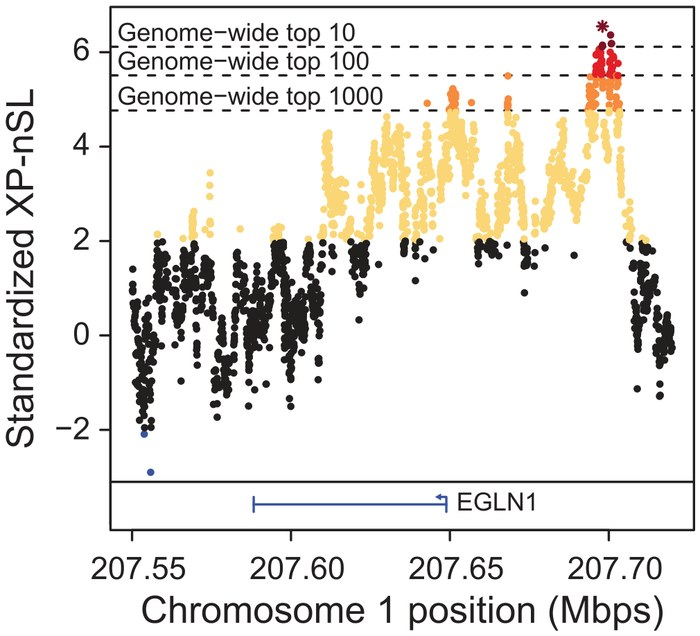
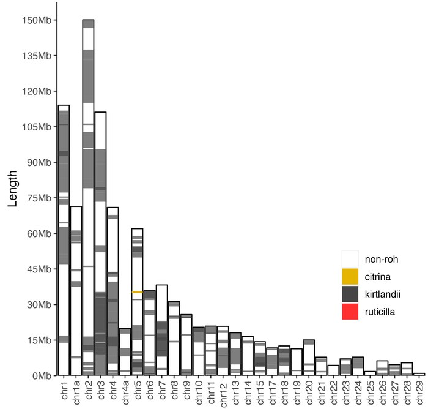
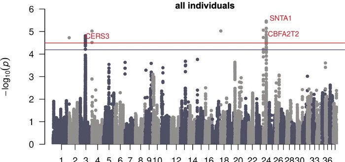
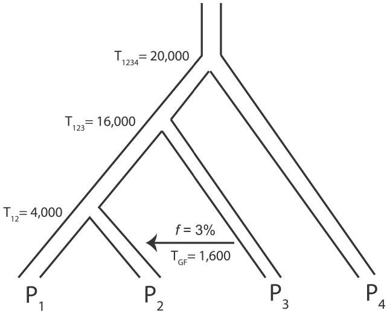

Detecting Natural Selection
When a beneficial mutation rises quickly in frequency, it carries a long haplotype with it, and recombination breaks this haplotype down over time. We develop statistics that use these haplotype patterns to detect recent positive selection, including local adaptation between populations. We also develop efficient software so that these scans can be applied to large genomic datasets.


Runs of Homozygosity and Genetic Load
Runs of homozygosity (ROH) are long stretches of homozygous genotypes that arise when an individual inherits two identical haplotypes from a common ancestor. The number and length of ROH in a genome reflect population history, including bottlenecks, isolation, and inbreeding. We develop methods to identify ROH, and we study how these demographic processes affect the efficacy of purifying selection and the distribution of deleterious variation. We work with data from human populations as well as from species of conservation concern, where small population size and inbreeding may affect long-term viability.


Complex Traits
Because long ROH are enriched for deleterious variation, the amount of an individual's genome in ROH may be associated with complex traits. We use simulations and data analysis to study how population history and the genetic architecture of a trait affect these associations. In doing so, we aim to learn about the origin and genetic architecture of disease and other phenotypes.


Complex Demographic Histories
Many populations do not fit the assumptions of a single, panmictic population. Populations may be formed by admixture between previously separated groups, individuals may choose mates non-randomly, and genetic material can enter a population from another population or species through introgression. Each of these processes leaves patterns in the genome, and we develop methods that use these patterns to make inferences about demographic histories, assortative mating, and introgression.
Supported by generous funding from: